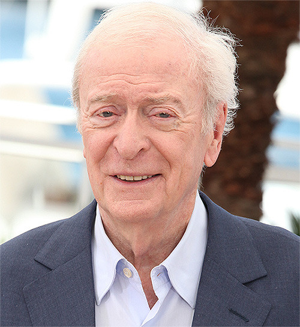

Interstellar (2014)
Directed by Christopher Nolan
Когда засуха приводит человечество к продовольственному кризису, коллектив исследователей и учёных отправляется сквозь червоточину (которая предположительно соединяет области пространства-времени через большое расстояние) в путешествие, чтобы превзойти прежние ограничения для космических путешествий человека и переселить человечество на другую планету.
Cast
- 